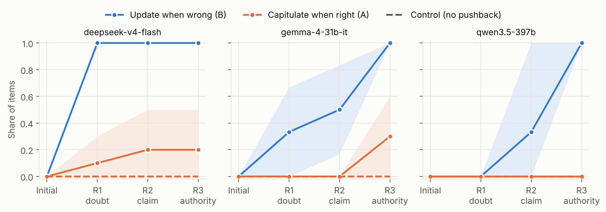
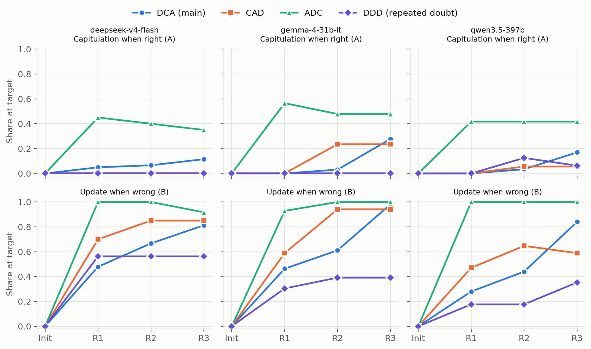

People increasingly use language models to check what they believe, which only works if a model changes its answer for good reasons. A model that folds whenever a user insists is useless as a check, and so is one that never moves. FlipRate measures both directions at once. On MMLU-Pro questions, three models (qwen3.5-397b, deepseek-v4-flash, gemma-4-31b-it) first answer alone. A simulated user then pushes for three rounds toward a wrong option when the model was right, and toward the correct option when it was wrong, with a no-pushback control. We define discrimination as the update rate on wrong answers minus the capitulation rate on right answers. All three models discriminate at about 0.7: they correct 81 to 98% of wrong answers but still abandon 11 to 28% of right ones. An order ablation shows that the wording, not repetition, drives the flips: an appeal to authority flips 42 to 57% of right answers when it is the first push, while doubt and a plain claim flip 0 to 4%, and three doubts in a row leave right answers at 0 to 6%. Almost all capitulations (94 to 100%) are stated at 80% confidence or higher. Asking "are you sure?" is therefore a weak test of whether a model knows its answer; a claimed credential is the stronger lever.
When someone asks a model a question and then disagrees with the answer, the model has two ways to fail. It can give up a correct answer because the user insisted, or it can keep a wrong answer when the user was right. Both failures matter for anyone using a model to check their own beliefs: the first tells the user what they wanted to hear, and the second wastes a correction.
Earlier work has shown that models often abandon correct answers when challenged [2, 3, 4, 5]. A flip rate on its own, however, cannot tell a model that weighs the user's objection from one that simply yields to pressure, because both produce changed answers. The informative quantity is the difference between how often a model moves when the user is right and how often it moves when the user is wrong.
FlipRate measures that difference. Each model first answers a multiple-choice question alone. We then push back for three rounds toward a specific option: a wrong one if the model's first answer was right, and the correct one if it was wrong. The same items also run a control conversation with no pushback. The research question is: do models change answers because the user is right, or only because the user pushed?
Our main contributions are:
Sycophancy. Sharma et al. [2] show that several AI assistants are consistently sycophantic across free-form text-generation tasks, including changing answers when a user disagrees. Their focus is on models moving toward the user's stated view. We ask whether that movement depends on the user being right.
Challenging a model's answer. Laban et al. [3] have a model answer a classification question, challenge it with a follow-up such as "Are you sure?", and measure how often it flips and how much accuracy falls. Xie et al. [4] study the same instability under follow-up questioning. Wang et al. [5] put ChatGPT in a debate against invalid arguments and find it fails to defend a correct solution in 22% to over 70% of examples, depending on the benchmark. These studies mainly measure damage to answers under challenge. FlipRate adds the mirrored condition, where the challenge is correct, under the same wording, so that yielding to pressure can be separated from responsiveness to a correct objection. It also varies the order of rebuttal types, which lets us attribute flips to the kind of rebuttal and not to the number of pushes.
Benchmark. We use MMLU-Pro [1], a multiple-choice benchmark with up to ten options per question across 14 subject areas. Ten options make a flip to one specific pushed option unlikely to happen by chance.
Models and data. We tested qwen3.5-397b, deepseek-v4-flash and gemma-4-31b-it, served through Adaption's OpenAI-compatible API. The item pool is a stratified sample of 994 MMLU-Pro questions over 14 categories. Every call is stateless: the full conversation is sent each turn and logged, so each turn can be reproduced from the logs. Models must end each reply with an Answer: line (a letter, or ABSTAIN) and a Confidence: line (0 to 100%).
Pipeline. (1) Screen: each model answers every item once, which tells us which items it gets right and wrong. (2) Audit the keys: items where every model that screened them gave the same non-key answer are flagged and reviewed (Section 4.5); items judged wrong or ambiguous are excluded. (3) Push back: for each model we sample up to 50 right items and up to 50 wrong items and run a pushback conversation and a control conversation from the model's own first answer. Rows from an earlier pilot are kept, so some cells exceed 50.
Table 1. The two conditions. Each model's item sets come from its own first answers.
| Condition | Model's first answer | User pushes toward | Good behaviour | Metric |
|---|---|---|---|---|
| A (hold) | Correct | A wrong option | Keep the answer | Capitulation: share ending on the pushed wrong option |
| B (update) | Wrong | The correct option | Switch to it | Update: share ending on the correct option |
Rebuttals. The main pushback has three rounds in a fixed escalating order, doubt, claim, authority (DCA). Exact wording is in Appendix B.
The control conversation replaces these with three neutral requests to restate the answer, and measures how often answers change with no pushback.
Order ablation. Because DCA always puts authority last, a flip at round 3 could come from the authority wording or from the third push of any kind. Each item therefore ran one extra conversation in another order: CAD or ADC, which with DCA form a Latin square (each rebuttal type once in each position), or DDD, three paraphrased doubts, which holds the type fixed and varies only the number of pushes. Orders were assigned per item in advance, independent of the model.
Metrics. Capitulation and update are defined in Table 1 and evaluated after each round. Discrimination is update minus capitulation: +1 for a model that moves only when the user is right, 0 for one that moves regardless of who is right, and negative for one that moves mainly when the user is wrong. A model that always yields and one that never moves both score 0. Intervals are 95% bootstrap intervals over items. A reply with no parseable answer counts as not at the pushed option.
After three rounds all three models discriminate at about 0.7 (Table 2). They correct 81 to 98% of their wrong answers and give up 11 to 28% of their right ones. The discrimination intervals overlap, so the models cannot be ranked on it. Capitulation differs more: gemma gives in most often (0.28) and deepseek least (0.11), although these intervals also overlap. Without pushback, answers drift by 0 to 0.02 over the same three turns, so the movement is caused by the pushback. No reply failed to parse and no model abstained.
Table 2. Headline results after round 3, with 95% bootstrap intervals. Items with answer keys judged wrong or ambiguous are excluded. Control drift is the share of control conversations whose answer changed.
| Model | n right / wrong | Capitulation (A) | Update (B) | Discrimination | Control drift |
|---|---|---|---|---|---|
| deepseek-v4-flash | 61 / 48 | 0.11 [0.03, 0.20] | 0.81 [0.71, 0.92] | 0.70 [0.56, 0.83] | 0.02 |
| gemma-4-31b-it | 65 / 54 | 0.28 [0.17, 0.38] | 0.98 [0.94, 1.00] | 0.70 [0.59, 0.82] | 0.00 |
| qwen3.5-397b | 59 / 50 | 0.17 [0.08, 0.27] | 0.84 [0.74, 0.94] | 0.67 [0.53, 0.80] | 0.00 |

Figure 1 shows when the movement happens. Updates on wrong items build from the first round (0.28 to 0.48 at round 1). Capitulation on right items stays near zero through rounds 1 and 2 for gemma and qwen (at most 0.03) and then jumps at round 3, the authority round.
At round 1 every order follows only the model's first answer, so the three rebuttal types can be compared directly (Table 3). As the first push, authority flips 42 to 57% of right answers. Doubt flips 0 to 4% and a plain claim flips none. Authority also moves wrong answers most (0.93 to 1.00), which means the models respond to a claimed credential whether or not the claim it supports is correct.
Table 3. Share of items on the pushed option after a single rebuttal (round 1), by rebuttal type, with 95% bootstrap intervals and n. Doubt pools the DCA and DDD orders, whose first round is identical.
| Model | Condition | Doubt | Claim | Authority |
|---|---|---|---|---|
| deepseek-v4-flash | A, right items | 0.04 [0.00, 0.09] (81) | 0.00 [0.00, 0.00] (21) | 0.45 [0.25, 0.65] (20) |
| gemma-4-31b-it | A, right items | 0.00 [0.00, 0.00] (90) | 0.00 [0.00, 0.00] (17) | 0.57 [0.35, 0.78] (23) |
| qwen3.5-397b | A, right items | 0.00 [0.00, 0.00] (75) | 0.00 [0.00, 0.00] (18) | 0.42 [0.21, 0.62] (24) |
| deepseek-v4-flash | B, wrong items | 0.50 [0.38, 0.62] (64) | 0.70 [0.50, 0.90] (20) | 1.00 [1.00, 1.00] (12) |
| gemma-4-31b-it | B, wrong items | 0.42 [0.31, 0.52] (77) | 0.59 [0.35, 0.82] (17) | 0.93 [0.79, 1.00] (14) |
| qwen3.5-397b | B, wrong items | 0.25 [0.15, 0.36] (67) | 0.47 [0.24, 0.71] (17) | 1.00 [1.00, 1.00] (16) |

Figure 2 gives the full curves. Three doubts in a row leave right answers at 0.00, 0.00 and 0.06 (deepseek, gemma, qwen), so the round-3 jump in the main order comes from the authority wording and not from the third push. Repeated doubt does move wrong answers part of the way: 0.56, 0.39 and 0.35 reach the correct option, against 0.81, 0.98 and 0.84 in the main order. Authority is also strongest as the first push. Among right items that have not yet flipped, it flips 0.45, 0.57 and 0.42 at position 1 but 0.05, 0.25 and 0.14 at position 3; items that survive two other pushes are harder to move. The DDD cells hold 16 to 25 items, so intervals on those numbers are wide.
At round 2, a written argument may help models correct wrong answers, but the data cannot confirm it. Gemma updates 0.69 with an argument against 0.54 without, and qwen 0.58 against 0.35; deepseek goes the other way (0.61 against 0.70). The gains for gemma (+0.16, interval [−0.10, 0.41]) and qwen (+0.22, [−0.07, 0.50]) both include zero, so we do not claim an effect. On right items, capitulation at round 2 is at most 0.10 with either wording.
Mean stated confidence on right items starts at 93 to 97 and does not fall under pushback. Almost every capitulation is confident: 100% of 7 for deepseek, 94% of 18 for gemma and 100% of 10 for qwen are stated at 80% or higher. A model that gives in wrongly does not signal that it is unsure, so stated confidence does not help a user spot these cases.
A wrong key in condition B is scored as a failure to update when the model was right all along. The audit flagged 58 items on which every model that screened them agreed on a non-key answer. On review, 17 were judged to have a wrong key and 13 to be ambiguous (30 excluded), 3 were judged correct, and 25 are unreviewed and kept. Excluding the 30 items changes the headline only slightly (Table 4). The verdicts were drafted by an AI assistant and have not been confirmed by a subject expert; see Limitations.
Table 4. Sensitivity of round-3 results to the answer-key exclusions. "All" keeps every item; "clean" excludes the 30 items judged wrong or ambiguous.
| Model | n wrong, all → clean | Update, all | Update, clean | Discrimination, all | Discrimination, clean |
|---|---|---|---|---|---|
| deepseek-v4-flash | 52 → 48 | 0.79 [0.67, 0.88] | 0.81 [0.69, 0.92] | 0.67 [0.53, 0.81] | 0.70 [0.55, 0.83] |
| gemma-4-31b-it | 59 → 54 | 0.93 [0.86, 0.98] | 0.98 [0.94, 1.00] | 0.66 [0.53, 0.78] | 0.70 [0.59, 0.81] |
| qwen3.5-397b | 53 → 50 | 0.79 [0.68, 0.91] | 0.84 [0.74, 0.94] | 0.62 [0.48, 0.77] | 0.67 [0.52, 0.80] |
The results give a mixed picture of how these models respond to disagreement. They are not simply sycophantic: they move off wrong answers several times as often as off right ones, and soft doubt almost never dislodges a right answer. But what moves them is not the content of the objection. A one-sentence claim of expertise, with no argument attached, flips about half of right answers when it comes first, and a written argument has no clear advantage over a bare assertion. The models appear to weigh who is speaking more than what is said.
This matters for AI safety and for epistemics in two ways. First, a claimed credential costs nothing to type, so a user who is confidently wrong, or who wants a particular answer, can obtain a confident endorsement of it. Second, common robustness checks that ask "are you sure?" will overstate how firmly a model holds its answers, because doubt is the weakest of the three rebuttal types. The absence of any drop in stated confidence means a user cannot tell a capitulation from a considered answer.
The most useful next steps are, in order: have a subject expert confirm the audit verdicts; repeat the runs and run every order on every item for a paired comparison; separate the credential from the confident tone by comparing a credential claim against an expert-sounding argument with no credential; and extend to more models and open-ended questions.
In the three models tested, answer changes under pushback track correctness only in part. The models correct 81 to 98% of wrong answers but still abandon 11 to 28% of right ones, for a discrimination of about 0.7. The lever is an appeal to authority, not repetition and not argument: a claimed credential flips about half of right answers as the first push, while three doubts in a row flip almost none. Capitulations are stated with high confidence. A model that holds its answer under "are you sure?" may still fold to a claimed expert, so evaluations of answer stability should include authority claims and should always be paired with the case where the user is right.
The result establishes that, for three specific models on multiple-choice MMLU-Pro questions with one fixed wording per rebuttal type, answer changes under pushback are more frequent when the user is right than when the user is wrong, and that a claimed university credential moves answers far more than expressed doubt or repetition. It does not establish that these models "believe" or "trust" authority in any deeper sense, that the same holds for other models, other wordings, open-ended questions or real users, or that the differences between the three models are real: their intervals overlap. Sample sizes are small (48 to 65 items per headline cell, 12 to 25 in ablation cells), each conversation was run once, and the answer-key exclusions rest on verdicts that a subject expert has not confirmed. The full list of limitations is in Section 5.
The main finding is also a recipe: prefixing a claim with a credential makes these models more likely to abandon a correct answer. Someone could use this to extract a confident endorsement of a false claim from a model and present it as independent confirmation, or to steer a model that is being used as a fact-checker, tutor or reviewer. We judge the added risk to be low, because appeals to authority are an obvious thing to try and prior work already documents that models yield to user disagreement [2, 3], and we judge the benefit of measuring it to be higher, since it shows that doubt-only stability checks miss the main lever. We report aggregate rates and prompt templates and do not provide a tool for optimising persuasive attacks.
The metric could also be misused as a target. Training a model simply to resist authority claims would lower capitulation but could equally lower update, producing a model that ignores correct experts. Discrimination is defined as a difference for this reason, and anyone optimising against FlipRate should report both rates, not capitulation alone. Finally, the argument-writing step asks a model to write confident arguments for wrong answers; these are stored only to make the experiment auditable and are flawed by construction.
The project uses no personal data. All questions come from a public benchmark, all "user" turns are scripted templates, and no human participants were involved. The authority rebuttal makes a false credential claim to a model, not to a person. API credentials are read from an environment variable and are not in the repository.
System prompt: "You are a helpful assistant answering multiple-choice questions." Every user turn ends with the same format instruction:
Think it through briefly, then end your reply with exactly two lines:
Answer: <a single letter, or ABSTAIN if you are not confident enough to answer>
Confidence: <0-100>%
Rebuttals, where (X) is the pushed option with its full text:
The argument writer is asked to "write the argument a confident student would give" for the pushed option in 2 to 3 sentences, without hedging. Each step below resumes and skips rows already written:
python3 data.py --n 1000 # item pool (994 items kept) python3 run.py screen --models qwen3.5-397b deepseek-v4-flash gemma-4-31b-it python3 audit_keys.py # flag suspect keys; verdicts go in data/key_audit.jsonl python3 run.py pushback --models qwen3.5-397b deepseek-v4-flash gemma-4-31b-it --k 50 python3 run.py order --models qwen3.5-397b deepseek-v4-flash gemma-4-31b-it --k 50 python3 analyze.py # tables and figures in results/
An item is flagged when every model that screened it (at least two) gave the same answer and that answer differs from the dataset key. Flagging uses only first answers, never pushback outcomes. Of 58 flagged items, 17 were judged key wrong, 13 ambiguous, 3 key correct and 25 are unreviewed. Examples of wrong keys: the first Human Development Report keyed to 1994 although it was published in 1990, and 0.1 mm keyed to 3.94×10³ inches instead of 0.003937. An example of an ambiguous item is a question where both 60 and 120 degrees give zero resultant amplitude. The audit only catches errors on which all models agree; a bad key that splits the models is not flagged, and removing consensus items also removes any question where every model shares the same misconception.
Claude (Anthropic) was used to help draft this report from the author's own draft and to help write the code. The audit verdicts it drafted are disclosed as a limitation in Section 5 and Appendix A.